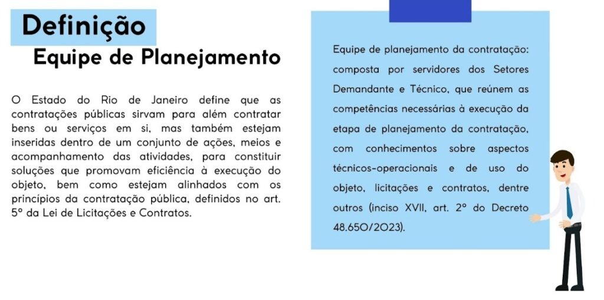
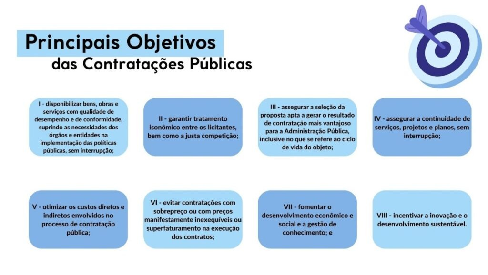
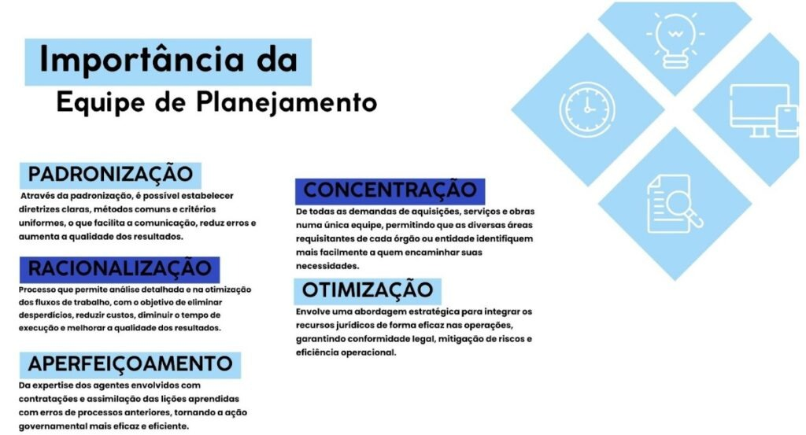
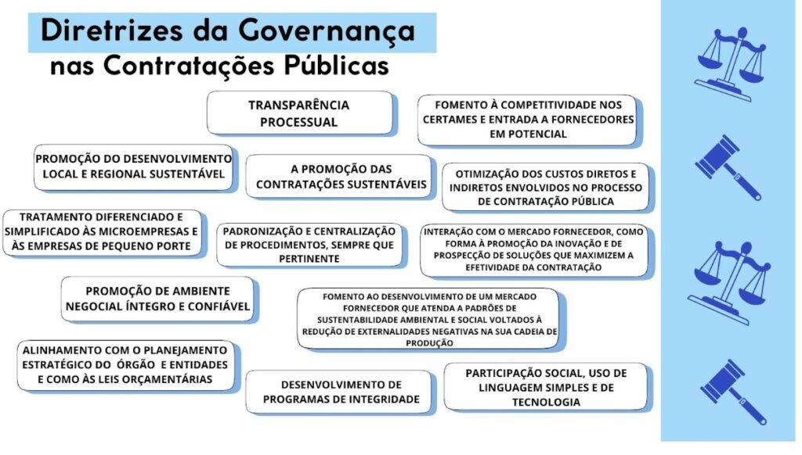
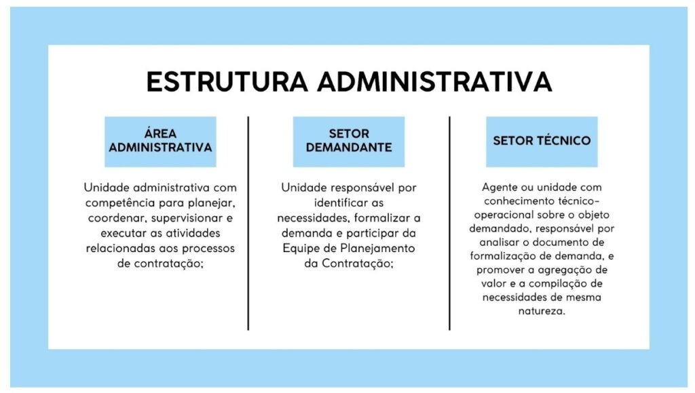
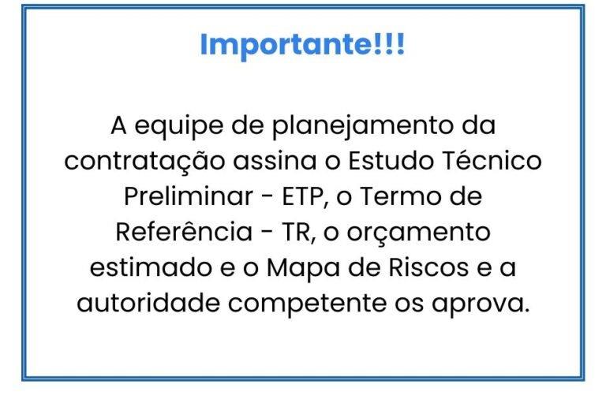

EQUIPE DE PLANEJAMENTO DA CONTRATAÇÃO
Fase de Planejamento • Base de Conhecimento REDELOG RJ
A Equipe de Planejamento da Contratação está inserida dentro de um contexto que visa trazer Governança para as contratações públicas, instituída e definida pelo Decreto Estadual nº 48.650, de 23 de agosto de 2023, que dispõe sobre a Governança Logística e a Governança das Contratações no âmbito da Administração Pública Estadual Direta, Autárquica e Fundacional.


Para que Serve a Equipe de Planejamento
A equipe de planejamento da contratação atuará diretamente na fase preparatória e é responsável por elaborar e assinar o Estudo Técnico Preliminar (ETP), o Termo de Referência (TR), o orçamento estimado e o Mapa de Riscos dos processos de contratação de bens e serviços. Além disso, essa equipe desempenha um papel fundamental no planejamento de todas as contratações a serem realizadas, abrangendo todas as modalidades de licitação, contratação direta, contratação por ata de registro de preços (seja como participante ou por adesão) e demais procedimentos auxiliares, como o credenciamento.
Elaboração e Assinatura Técnica
Elaborar e assinar os principais artefatos que fundamentam a futura licitação ou contratação direta:
- Estudo Técnico Preliminar (ETP);
- Termo de Referência (TR) ou Projeto Básico;
- Orçamento Estimado;
- Mapa de Riscos da contratação.
Abrangência Procedimental
Desempenha papel fundamental no planejamento de todas as contratações a serem realizadas pelo órgão ou entidade:
- Todas as modalidades licitatórias (Pregão, Concorrência, etc.);
- Contratações diretas (Dispensas e Inexigibilidades);
- Atas de Registro de Preços (como participante ou por adesão);
- Procedimentos auxiliares (como credenciamento).

Cabe, ainda, à equipe de planejamento, a verificação do enquadramento dos bens de consumo nas categorias de qualidade comum e de luxo. A Lei nº 14.133/2021, a Lei de Licitações e Contratos Administrativos, veda a aquisição de artigos de luxo na forma da regulamentação.

Quem Deve Integrar a Equipe de Planejamento?
É importante que a equipe de planejamento seja composta por agentes que contem com as competências necessárias para a execução das atividades inerentes à contratação. Tais atividades podem ser divididas em três enfoques principais:

1. Integrante Requisitante / Demandante
Servidor representante da área que vivencia a necessidade real do órgão. Contribui com o detalhamento dos problemas enfrentados, rotinas de trabalho, quantidades estimadas e níveis de serviço esperados.
2. Integrante Técnico
Profissional que detém o conhecimento específico do mercado fornecedor e do objeto a ser contratado (ex.: engenheiros, técnicos de T.I., farmacêuticos, especialistas em transporte ou infraestrutura).
3. Integrante Administrativo
Agente lotado no setor de licitações e contratações, com expertise nas normas processuais, jurisprudência, elaboração de minutas e modelagem orçamentária.
Capacitação e Colaboração com o PCA
É dever da Administração assegurar a contínua capacitação dos membros da equipe por meio das trilhas de formação da REDELOG (Capacitação). Sob orientação do gestor setorial, a equipe colabora no levantamento de dados para o PCA.
Em alguns casos um mesmo agente pode atuar em mais de um papel. Ele pode, por exemplo, ser da área requisitante e, ao mesmo tempo, atuar no setor de contratações. No exemplo da T.I., a área técnica pode especificar um equipamento para seu próprio uso como área demandante.
É responsabilidade da administração empenhar-se para assegurar que seus servidores que compõem a equipe de planejamento possuam a capacidade técnica e a qualificação adequada para atender as necessidades demandadas. Para os integrantes da área administrativa que atuam com licitações e contratações há variedade de cursos e demais iniciativas de formação indicadas no Portal da Redelog, em Capacitação.
A equipe de planejamento, sob orientação do gestor setorial da Redelog, deverá, ainda, colaborar no levantamento das informações necessárias para a elaboração do Plano de Contratações Anual – PCA.
Sobreposição de Papéis e Segregação de Funções:
Em alguns casos um mesmo agente público pode atuar em mais de um papel – como na área de Tecnologia da Informação (T.I.), em que a unidade técnica pode especificar um servidor ou link de comunicação para o seu próprio setor. Todavia, a equipe compartilhada garante que nenhuma etapa fique desassistida e que o princípio da segregação de funções seja plenamente preservado.
